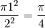

Estimating Pi using Monte Carlo Method¶
This example demonstrates the Monte Carlo method for estimating the value of
 . Monte Carlo methods rely on repeated independent and random sampling.
Such methods work well with parallel shared systems and distributed systems as
the work can be split among many threads or processes.
. Monte Carlo methods rely on repeated independent and random sampling.
Such methods work well with parallel shared systems and distributed systems as
the work can be split among many threads or processes.
The problem can be imagined in terms of playing darts. Let the dartboard consist of a square target with a circular target inside of it. To solve this by means of using a ‘Monte Carlo Simulation’, you would simply throw a bunch of darts at the target and record the percentage that land in the inner circular target.
We can extend this idea to approximate quite easily.
Suppose the square target has a length of two feet and the circular target
has a radius of one foot.

Based on the dimensions of the board, we have that the ratio of the area of the circle to the area of the square is

As it happens, we can calculate a value for the ratio of the area of the circle
to the area of the square with a Monte Carlo simulation. We pick random
points in the square and find the ratio of the number of points inside the circle
to the total number of points. This ratio should approach .
We multiply this by 4 to get our estimate of .
This can be simplified by using only a quarter of the board. The ratio of the
area of the circle to the area of the square is still /4. To
simulate the throw of a dart, we generate a number of random points with
coordinates (x,y). These coordinates are uniformly distributed random numbers
between 0 and 1. Then, we determine how many of these points fall inside of
the circle and take the ratio of the areas.
Sequential Code¶
file: cross_platform_examples/monteCarloPi/calcPiSeq/calcPiSeq.C
Build inside calcPiSeq directory:
make calcPiSeq
Execute on the command line inside calcPiSeq directory:
./calcPiSeq <number of tosses>
The code follows from the description of the problem. One thing to point out is the use of random generator rand_r. rand_r is a reentrant and thread-safe function that allows us to get reproducible behavior. This is the reason behind using C++ for coding this problem.
To do:
Run and compile the code experimenting with the number of tosses. Compare the source code to the output. What do you notice about the accuracy of our estimation of pi as the number of tosses increase?
Record execution times using 16 million, 32 million, 64 million, 128 million, and 256 million for the number of tosses.
1 2 3 4 5 6 7 8 9 10 11 12 13 14 15 16 17 18 19 20 21 22 23 24 25 26 27 28 29 30 31 32 33 34 35 36 37 38 39 40 41 42 43 44 45 46 47 48 49 50 51 52 53 54 55 56 57 58 59 60 61 62 63 64 65 66 67 68 | /*
* Hannah Sonsalla, Macalester College, 2017
*
* calcPiSeq.C
*
* ...sequential program to calculate the value of Pi using
* Monte Carlo Method.
*
* Usage: ./calcPiSeq <number of tosses>
*
*/
#include <stdio.h>
#include <stdlib.h>
#include <math.h>
#include <time.h>
void Get_input(int argc, char* argv[], long* totalNumTosses_p);
long Toss (long numProcessTosses);
int main(int argc, char** argv) {
long numTosses, numInCircle;
double piEstimate;
clock_t start, finish;
double PI25DT = 3.141592653589793238462643; /* 25-digit-PI*/
Get_input(argc, argv, &numTosses); // Read total number of tosses from command line
start = clock();
numInCircle = Toss(numTosses);
finish = clock();
piEstimate = (4*numInCircle)/((double) numTosses);
printf("Elapsed time = %f seconds \n", (double)(finish-start)/CLOCKS_PER_SEC);
printf("Pi is approximately %.16f, Error is %.16f\n", piEstimate, fabs(piEstimate - PI25DT));
return 0;
}
/* Function gets input from command line for totalNumTosses */
void Get_input(int argc, char* argv[], long* numTosses_p){
if (argc!= 2){
fprintf(stderr, "usage: %s <number of tosses> \n", argv[0]);
fflush(stderr);
*numTosses_p = 0;
} else {
*numTosses_p = atoi(argv[1]);
}
// 0 totalNumTosses ends the program
if (*numTosses_p == 0) {
exit(-1);
}
}
/* Function implements Monte Carlo version of tossing darts at a board */
long Toss (long numTosses){
long toss, numInCircle = 0;
double x,y;
unsigned int seed = (unsigned) time(NULL);
srand(seed);
for (toss = 0; toss < numTosses; toss++) {
x = rand_r(&seed)/(double)RAND_MAX;
y = rand_r(&seed)/(double)RAND_MAX;
if((x*x+y*y) <= 1.0 ) numInCircle++;
}
return numInCircle;
}
|
OpenMP Code¶
file: cross_platform_examples/monteCarloPi/calcPiOMP/calcPiOMP.C
Build inside calcPiOMP directory:
make calcPiOMP
Execute on the command line inside calcPiOMP directory:
./calcPiOMP <number of threads> <number of tosses>
The shared memory version of the code begins by setting the number of threads for the program. We then calculate the number of tosses each thread will simulate. The block of code beneath the #pragma omp parallel is run by each individual thread. To get the total number of tosses that land in the circle, we reduce each thread’s relevant tosses to a single value.
omp_set_num_threads(numThreads); // Set number of threads
numThreadTosses = totalNumTosses/numThreads; // Calculate number of tosses per thread
start = omp_get_wtime();
#pragma omp parallel reduction(+:numberInCircle)
{
my_thread_id = omp_get_thread_num();
numberInCircle = Toss(numThreadTosses, my_thread_id);
}
finish = omp_get_wtime();
To do:
Find the speedup and efficiency of this program. To do so, you will need your execution times above from the sequential version of calculating pi using the Monte Carlo method.
Use 2, 4, 8, 12, 14, and 16 for the number of processes and 16 million, 32 million, 64 million, 128 million, and 256 million for the number of tosses.
Make a copy of the template provided here and record the execution times from each combination in the execution time table. The speedup and efficiency of each combination will automatically be calculated and corresponding speedup and efficiency graphs will be made.
MPI Code¶
file: cross_platform_examples/monteCarloPi/calcPiMPI/calcPiMPI.C
Build inside calcPiMPI directory:
make calcPiMPI
Execute on the command line inside calcPiMPI directory:
mpirun -np <N> ./calcPiMPI <number of tosses>
Note
This command is going to run all processes on the machine on which you type it. You will need a separate machines file for running the code on a cluster of machines. This note applies for all examples utilizing MPI.
The distributed memory version starts with initializing the execution environment and assigning a unique rank to each process. Next, we calculate the number of tosses that each process will sample. All processes sample their predetermined number of tosses and determine whether or not they fall inside the circle. The local values for tosses that land inside the circle are reduced to a single value.
numProcessTosses = totalNumTosses/numProcs;
MPI_Barrier(MPI_COMM_WORLD);
start = MPI_Wtime();
processNumberInCircle = Toss(numProcessTosses, myRank);
finish = MPI_Wtime();
loc_elapsed = finish-start;
MPI_Reduce(&loc_elapsed, &elapsed, 1, MPI_DOUBLE, MPI_MAX, 0, MPI_COMM_WORLD);
MPI_Reduce(&processNumberInCircle, &totalNumberInCircle, 1, MPI_LONG, MPI_SUM, 0, MPI_COMM_WORLD);
To do:
Find the speedup and efficiency of this program the same way you did previously for the OpenMP version. To do so, you will need your execution times from the sequential version of calculating pi using the Monte Carlo method above.
Use 2, 4, 8, 12, 14, and 16 for the number of processes and 16 million, 32 million, 64 million, 128 million, and 256 million for the number of tosses.
Make a copy of the template provided at this link and record the execution times from each combination in the execution time table. The speedup and efficiency of each combination will automatically be calculated and corresponding speedup and efficiency graphs will be made.
Compare the speedup and efficiency of this program to the speedup and efficiency of the OpenMP program. What do you observe?
MPI+OpenMP Hybrid Code¶
file: cross_platform_examples/monteCarloPi/calcPiHybrid/calcPiHybrid.C
Build inside calcPiHybrid directory:
make calcPiHybrid
Execute on the command line inside calcPiHybrid directory:
mpirun -np <N> ./calcPiHybrid <number of threads> <number of tosses>
This hybrid version relies on both distributed memory from MPI and shared memory from OpenMP. A programming model that combines MPI and OpenMP uses MPI to distribute work among processes, each of which uses OpenMP to assign threads to its task. First, we calculate the number of tosses that each process’ threads will sample. Then, each process initializes its threads. Every thread simulates the predetermined number of tosses and counts how many land in circle. The local values for tosses that land inside the circle from threads are reduced before each process’ local values are reduced.
localNumTosses = totalNumTosses/(numProcs * numThreads);
MPI_Barrier(MPI_COMM_WORLD);
start = MPI_Wtime();
#pragma omp parallel num_threads(numThreads) reduction(+:processThreadNumberInCircle)
{
int threadID = omp_get_thread_num();
processThreadNumberInCircle = Toss(localNumTosses,myRank, threadID);
printf("Thread %d of %d from process %d of %d on %s has %ld in circle\n", threadID, numThreads,
myRank, numProcs, hostName, processThreadNumberInCircle);
}
finish = MPI_Wtime();
loc_elapsed = finish-start;
MPI_Reduce(&loc_elapsed, &elapsed, 1, MPI_DOUBLE, MPI_MAX, 0, MPI_COMM_WORLD);
MPI_Reduce(&processThreadNumberInCircle, &totalNumberInCircle, 1, MPI_LONG, MPI_SUM, 0, MPI_COMM_WORLD);
To do:
Try the hybrid program with different number of processes and different number of threads. What combinations of processes and threads seem to run faster? Why might this be the case?
Run the program using 4 processes, 4 threads and 64,000,000 tosses. Compare the execution time to the time it took to run the MPI program using 4 processes and 16,000,000 tosses. How do the times compare?
Run the program using 4 processes, 4 threads and 256,000,000 tosses. Compare the execution time to the time it took to run the MPI program using 4 processes and 64,000,000 tosses. Can you explain this behavior?